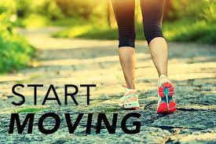

Walking is a great way to improve or maintain your overall health. Just 30 minutes every day can increase cardiovascular fitness, strengthen bones, reduce excess body fat, and boost muscle power and endurance.It can also reduce your risk of developing conditions such as heart disease, type 2 diabetes, osteoporosis and some cancers.Unlike some other forms of exercise, walking is free and doesn’t require any special equipment or training.Physical activity does not have to be vigorous or done for long periods in order to improve your health.Walking is low impact, requires minimal equipment, can be done at any time of day and can be performed at your own pace. You can get out and walk without worrying about the risks associated with some more vigorous forms of exercise.Walking is also a great form of physical activity for people who are overweight, elderly, or who haven’t exercised in a long time.Walking for fun and fitness isn’t limited to strolling by yourself around local neighbourhood streets. There are various clubs, venues and strategies you can use to make walking an enjoyable and social part of your lifestyle.To know about the benifits of books
You carry your own body weight when you walk. This is known as weight-bearing exercise. Some of the benefits include:
To get the health benefits, try to walk for at least 30 minutes as briskly as you can on most days of the week. ‘Brisk’ means you can still talk but not sing, and you may be puffing slightly.Moderate activities such as walking pose little health risk but if you have a medical condition, check with your doctor before starting any new exercise program of physical activity.
GO HOME.